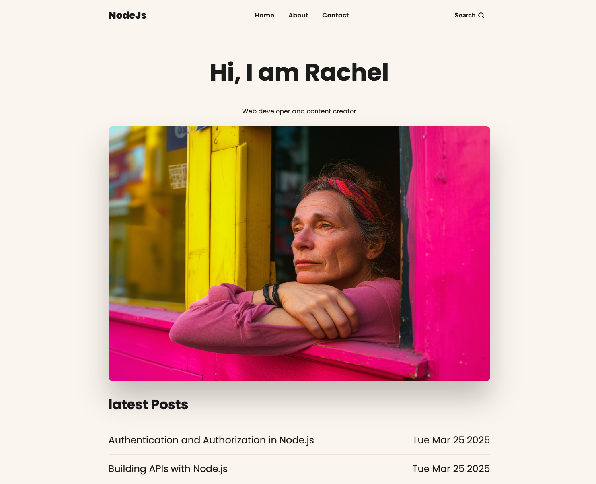
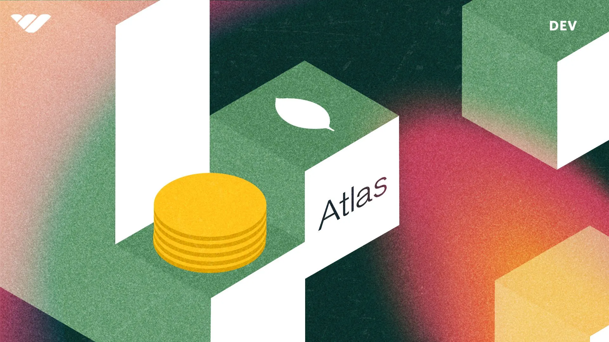

✨ Node.js Blog – Project Details
Project Overview
Node.js Blog is a server-rendered blog website built with Node.js, Express, and MongoDB. Posts are stored in a cloud database and rendered into pages on the server, with search and pagination so readers can find and browse articles easily. I built it to learn how a back-end web app works end to end: handling requests, reading and writing data, rendering pages, and deploying to a live server.
Who It's For
- Readers who want to browse and search short articles about web development
- The site owner, who needs posts stored in one place and shown automatically, without editing HTML by hand
- Me as a learner: a hands-on way to practise back-end development beyond front-end frameworks

Tech Stack
Node.js, Express.js, MongoDB Atlas, Mongoose, EJS templates, CSS, Render (hosting), GitHub
The Problem
My earlier projects were mostly front-end. I wanted to understand what happens on the server side:
- How a server receives a request and decides which page to send back
- How data is stored in a database and read back into a page
- How to keep secrets like database passwords out of public code
- How to deploy a full app, not just static files, to a live server
How the Project Solves These Problems
Express Routing (MVC)
- Routes, Mongoose models, and EJS views are kept in separate folders, so each part of the app has one clear job.
MongoDB + Mongoose
- Blog posts are stored in MongoDB Atlas. A Mongoose schema defines each post's title, body, and created date.
Server-Rendered Pages
- EJS templates with shared partials for the header and footer turn database records into full HTML pages.
Search & Pagination
- Readers can search posts by keyword, and the home page loads a few posts at a time, newest first.
Safe Configuration
- The database connection string lives in environment variables, kept out of the public GitHub repository.
Key Features
- Home page listing the latest posts with publish dates
- Individual post pages generated from database records
- Keyword search across posts
- Pagination for browsing older posts
- Responsive layout that works on phone and desktop
Technical Insights
- Debugging a failed deployment: After months without use, the app failed to deploy on Render with a
querySrv ENOTFOUNDerror. The build had succeeded, so I focused on the database connection. - Ruling out the code: I tested the same connection in MongoDB Compass and got the same error, which showed the problem was outside the app.
- Finding the cause: In MongoDB Atlas, the free-tier cluster had been paused after a period of inactivity. I resumed it, checked the network access rules, confirmed the connection in Compass, and redeployed.
- Build vs. runtime errors: I learned to read deployment logs in order and tell the difference between a build failure and an app that crashes after starting.
- Free-tier limits: Free databases and hosting pause or sleep when unused, so a live demo needs occasional checks.
Result
The blog is live on Render and connected to MongoDB Atlas. The project gave me hands-on experience with the full path of a web request, from route to database to rendered page, and with troubleshooting a real deployment problem step by step. Note: it runs on a free plan, so the first load may take up to a minute.
